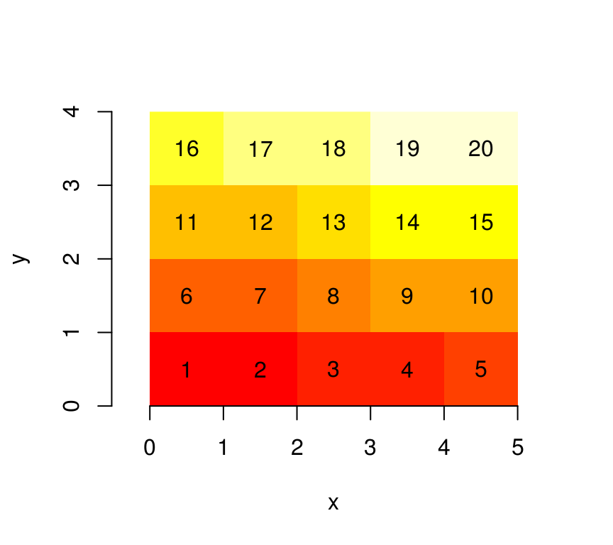
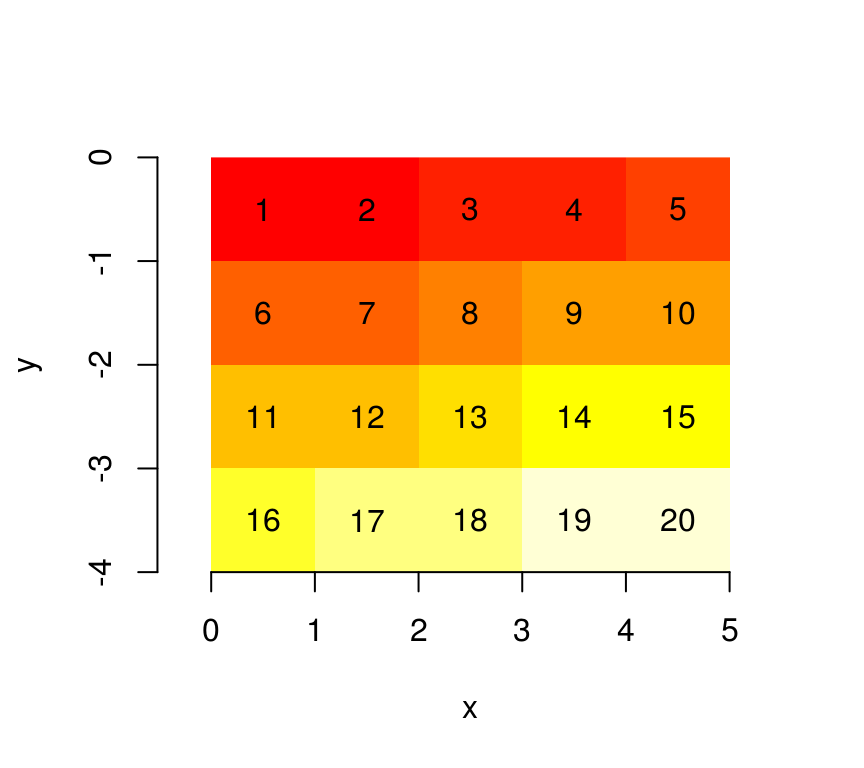
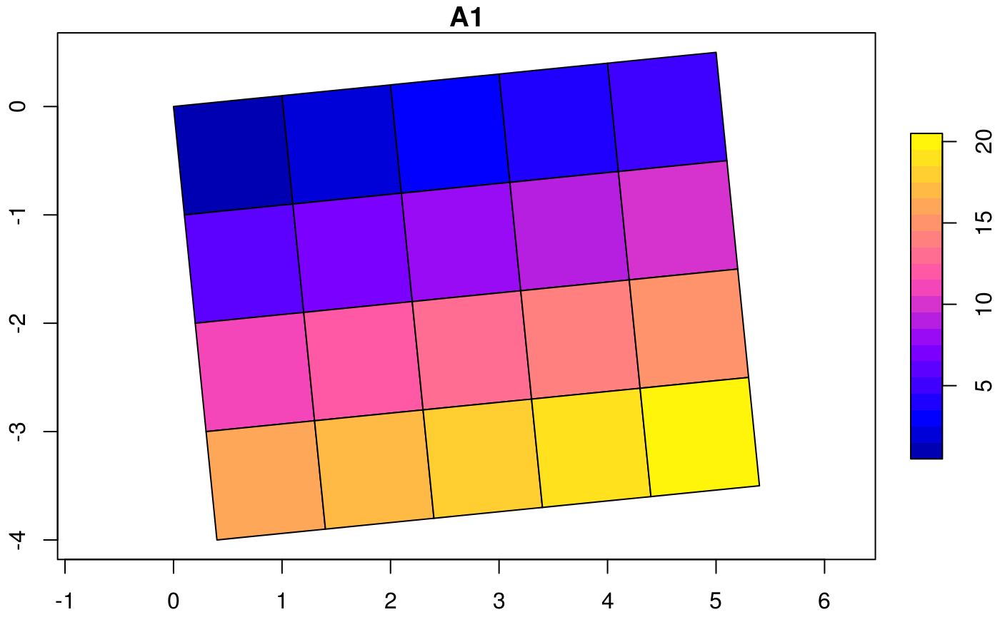
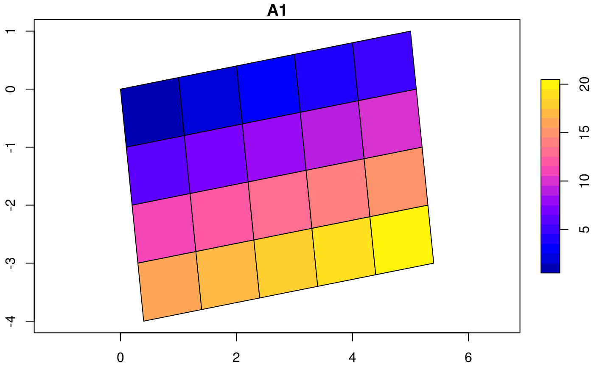
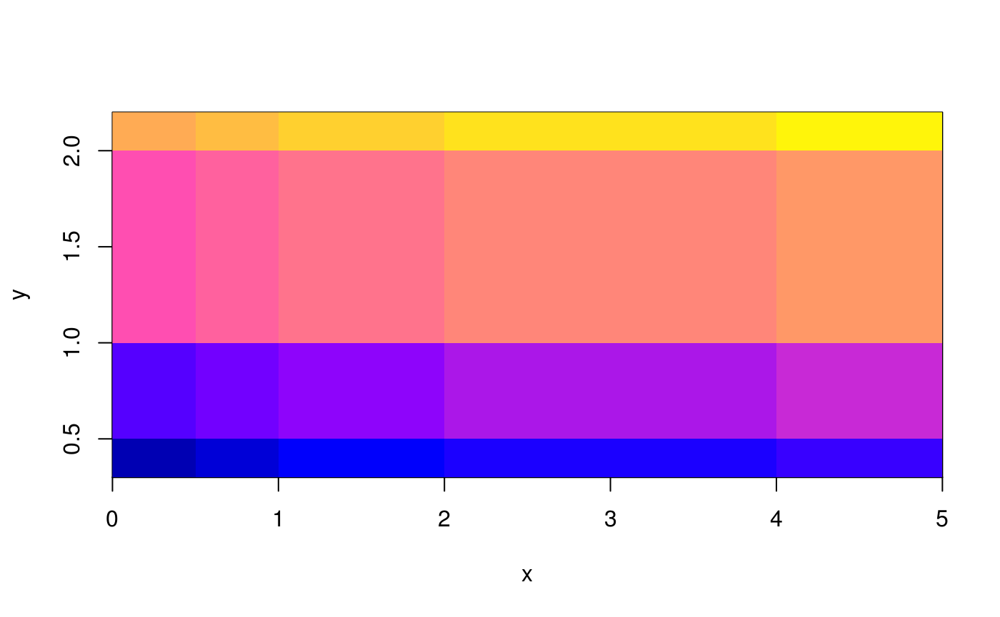
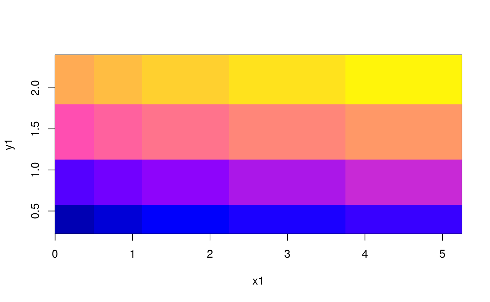
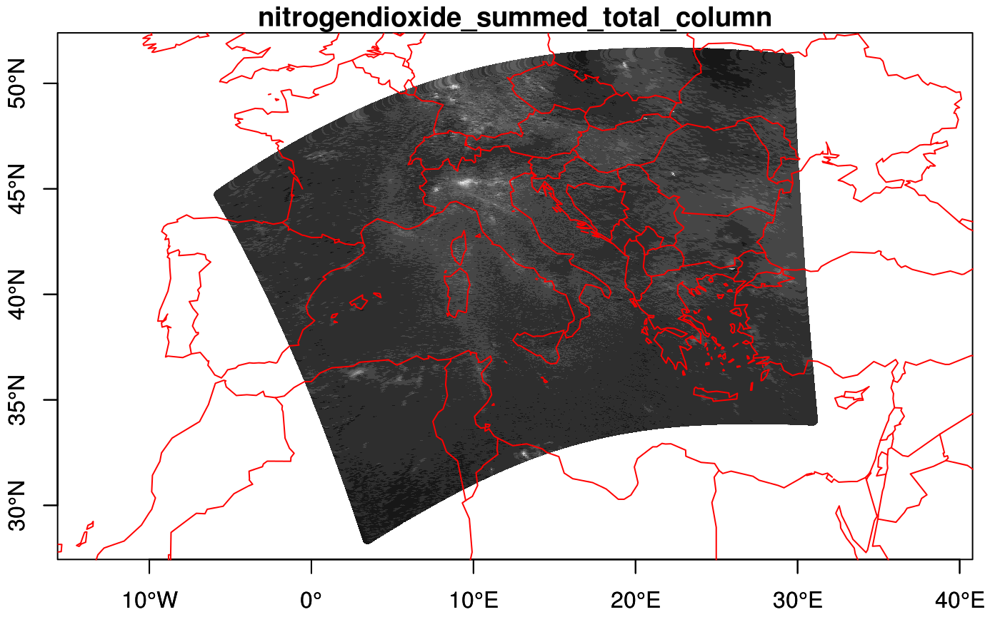
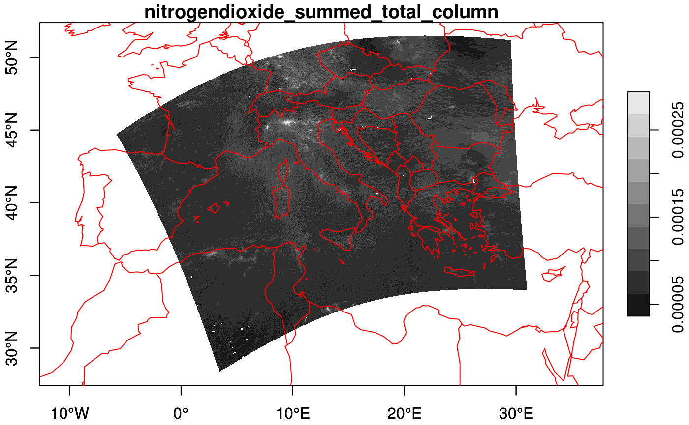
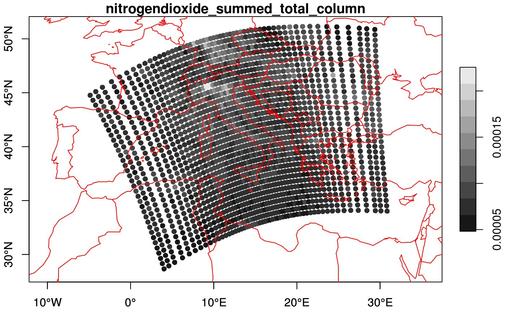
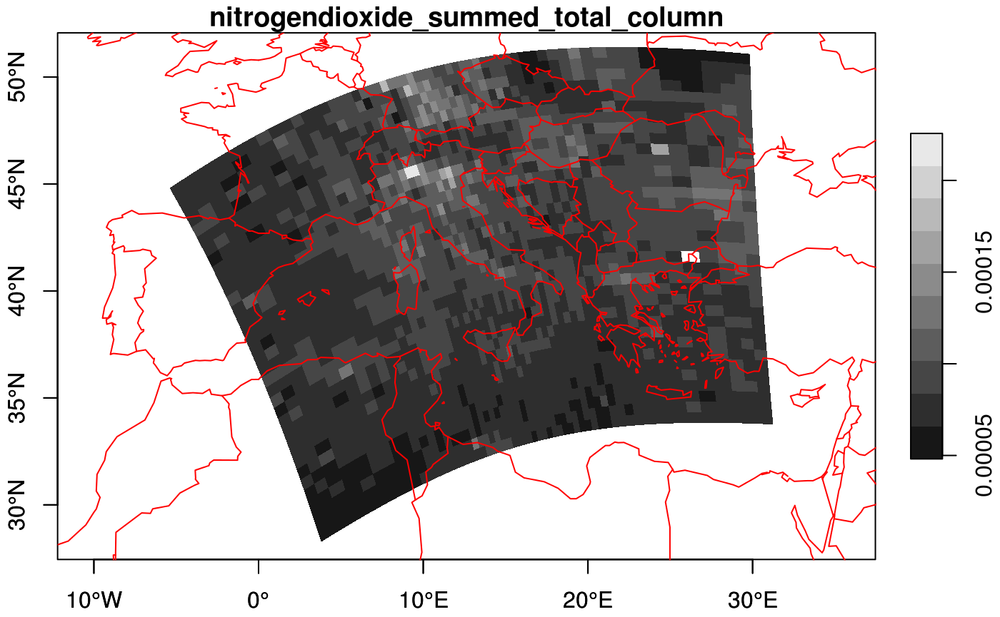

This vignette explains the data model of stars objects, illustrated using artificial and real datasets.
With a very simple file created from a \(4 \times 5\) matrix
suppressPackageStartupMessages(library(stars))
m = matrix(1:20, nrow = 5, ncol = 4)
dim(m) = c(x = 5, y = 4) # named dim
(s = st_as_stars(m))
## stars object with 2 dimensions and 1 attribute
## attribute(s):
## A1
## Min. : 1.00
## 1st Qu.: 5.75
## Median :10.50
## Mean :10.50
## 3rd Qu.:15.25
## Max. :20.00
## dimension(s):
## from to offset delta refsys point values
## x 1 5 0 1 NA NA NULL [x]
## y 1 4 0 1 NA NA NULL [y]we see that
from and to fields of each dimension define a range that corresponds to the array dimension:When we plot this object, using the image method for stars objects,

we see that \((0,0)\) is the origin of the grid (grid corner), and \(1\) the coordinate value increase from one index (row, col) to the next. It means that consecutive matrix columns represent grid lines, going from south to north. Grids defined this way are regular: grid cell size is constant everywhere.
Many actual grid datasets have y coordinates (grid rows) going from North to South (top to bottom); this is realised with a negative value for delta. We see that the grid origing \((0,0)\) did not change:

An example is the GeoTIFF carried in the package, which, as probably all data sources read through GDAL, has a negative delta for the y-coordinate:
Dimension tables of stars objects carry a raster attribute:
str(attr(st_dimensions(s), "raster"))
## List of 3
## $ affine : num [1:2] 0 0
## $ dimensions : chr [1:2] "x" "y"
## $ curvilinear: logi FALSE
## - attr(*, "class")= chr "stars_raster"which is a list that holds
dimensions: character, the names of raster dimensions (if any), as opposed to e.g. spectral, temporal or other dimensionsaffine: numeric, the affine parameterscurvilinear: a logical indicating whether the raster is curvilinearThese fields are needed at this level, because they describe properties of the array at a higher level than individual dimensions do: a pair of dimensions forms a raster, both affine and curvilinear describe how x and y as a pair are derived from grid indexes (see below) when this cannot be done on a per-dimension basis.
With two affine parameters \(a_1\) and \(a_2\), \(x\) and \(y\) coordinates are derived from (1-based) grid indexes \(i\) and \(j\), grid offset values \(o_x\) and \(o_y\), and grid cell sizes \(d_x\) and \(d_y\) by
\[x = o_x + (i-1) d_x + (j-1) a_1\]
\[y = o_y + (i-1) a_2 + (j-1) d_y\] Clearly, when \(a_1=a_2=0\), \(x\) and \(y\) are entirely derived from their respective index, offset and cellsize.
Note that for integer indexes, the coordinates are that of the starting edge of a grid cell; to get the grid cell center of the top left grid cell (in case of a negative \(d_y\)), use \(i=1.5\) and \(j=1.5\).
We can rotate grids by setting \(a_1\) and \(a_2\) to a non-zero value:
attr(attr(s, "dimensions"), "raster")$affine = c(0.1, 0.1)
plot(st_as_sf(s, as_points = FALSE), axes = TRUE, nbreaks = 20)
The rotation angle, in degrees, is
Sheared grids are obtained when the two rotation coefficients, \(a_1\) and \(a_2\), are unequal:
attr(attr(s, "dimensions"), "raster")$affine = c(0.1, 0.2)
plot(st_as_sf(s, as_points = FALSE), axes = TRUE, nbreaks = 20)
Now, the y-axis and x-axis have different rotation in degrees of respectively
Rectilinear grids have orthogonal axes, but do not have congruent (equally sized and shaped) cells: each axes has its own irregular subdivision.
x = c(0,0.5,1,2,4,5)
y = c(0.3,0.5,1,2,2.2)
r = st_as_stars(list(m = m), dimensions = st_dimensions(x = x, y = y))
r
## stars object with 2 dimensions and 1 attribute
## attribute(s):
## m
## Min. : 1.00
## 1st Qu.: 5.75
## Median :10.50
## Mean :10.50
## 3rd Qu.:15.25
## Max. :20.00
## dimension(s):
## from to offset delta refsys point values
## x 1 6 NA NA NA NA 0, ..., 5
## y 1 5 NA NA NA NA 0.3, ..., 2.2
#plot(st_as_sf(r, as_points = FALSE), axes = TRUE, nbreaks = 20)
image(x, y, m, col = sf.colors(21))

Curvilinear grids are grids whose grid lines are not straight. Rather than describing the curvature parametrically, the typical (HDF5 or netcdf) files in which they are found have two raster layers, one with the latitudes and one with the longitudes for every grid cell. Using the GDAL interface, we need to compose a stars object from the array and a long and lat matrix. The matrices with longitude and latitude values are stored in the values field of their respective dimensions.
As an example, we will use a Sentinel 5P dataset available from package starsdata; this package can be installed with
The dataset is found here:
(s5p = system.file("sentinel5p/S5P_NRTI_L2__NO2____20180717T120113_20180717T120613_03932_01_010002_20180717T125231.nc", package = "starsdata"))
## [1] "/home/travis/R/Library/starsdata/sentinel5p/S5P_NRTI_L2__NO2____20180717T120113_20180717T120613_03932_01_010002_20180717T125231.nc"We can construct the curvilinear stars raster by calling st_as_stars on three arrays, with data, longitude and latitudes:
lat_ds = paste0("HDF5:\"", s5p, "\"://PRODUCT/latitude")
lon_ds = paste0("HDF5:\"", s5p, "\"://PRODUCT/longitude")
nit_ds = paste0("HDF5:\"", s5p, "\"://PRODUCT/SUPPORT_DATA/DETAILED_RESULTS/nitrogendioxide_summed_total_column")
lat = read_stars(lat_ds)
## Warning in get_raster(affine = pr$geotransform[c(3, 5)], dimensions =
## c("x", : setting NA affine values to zero
lon = read_stars(lon_ds)
## Warning in get_raster(affine = pr$geotransform[c(3, 5)], dimensions =
## c("x", : setting NA affine values to zero
nit = read_stars(nit_ds)
## Warning in get_raster(affine = pr$geotransform[c(3, 5)], dimensions =
## c("x", : setting NA affine values to zero
nit[[1]][nit[[1]] > 9e+36] = NA
ll = setNames(c(lon, lat), c("x", "y"))
nit.c = st_as_stars(nit, curvilinear = ll)
st_crs(nit.c) = 4326
nit.c
## stars object with 2 dimensions and 1 attribute
## attribute(s):
## nitrogendioxide_summed_total_column
## Min. :0e+00
## 1st Qu.:1e-04
## Median :1e-04
## Mean :1e-04
## 3rd Qu.:1e-04
## Max. :5e-04
## NA's :330
## dimension(s):
## from to offset delta refsys point
## x 1 450 NA NA +proj=longlat +datum=WGS8... NA
## y 1 278 NA NA +proj=longlat +datum=WGS8... NA
## values
## x [450x278] -5.81066, ..., 30.9468 [x]
## y [450x278] 28.3605, ..., 51.4686 [y]
## curvilinear gridplot(nit.c, breaks = "equal", reset = FALSE, axes = TRUE, as_points = TRUE, pch = 16, key.pos = NULL)
maps::map('world', add = TRUE, col = 'red')
plot(nit.c, breaks = "equal", reset = FALSE, axes = TRUE, as_points = FALSE, border = NA)
maps::map('world', add = TRUE, col = 'red')
We can downsample the data by
(nit.c = stars:::st_downsample(nit.c, 8))
## stars object with 2 dimensions and 1 attribute
## attribute(s):
## nitrogendioxide_summed_total_column
## Min. :0.00005
## 1st Qu.:0.00007
## Median :0.00008
## Mean :0.00009
## 3rd Qu.:0.00009
## Max. :0.00023
## NA's :36
## dimension(s):
## from to offset delta refsys point
## x 1 57 NA NA +proj=longlat +datum=WGS8... NA
## y 1 35 NA NA +proj=longlat +datum=WGS8... NA
## values
## x [57x35] -5.59621, ..., 30.8488 [x]
## y [57x35] 28.3605, ..., 51.1544 [y]
## curvilinear grid
plot(nit.c, breaks = "equal", reset = FALSE, axes = TRUE, as_points = TRUE, pch = 16)
maps::map('world', add = TRUE, col = 'red')
which doesn’t look nice, but plotting the cells as polygons looks better:
plot(nit.c, breaks = "equal", reset = FALSE, axes = TRUE, as_points = FALSE, border = NA)
maps::map('world', add = TRUE, col = 'red')